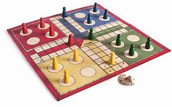

Sports and Board Games
This blog is on Sports and Board Games. We will learn information about both and its uses,cons, and how they are fun and help in many ways like coordination and concentration. They are also great ways to pass time and more.
Content of the blog:
Sports:
Football
Basketball
Badminton
Swimming
Board Games:
Chess
Carrom
Uno
Ludo
Sports:
Football:
Football, known as soccer in some regions, stands as the world's most popular sport, captivating hearts and minds across continents. Its allure lies in a captivating blend of athleticism, strategy, and raw emotion, transcending mere competition to become a cultural phenomenon. Played and celebrated in nearly every corner of the globe, football serves as a unifying force, bridging diverse cultures and languages through a shared love for the beautiful game.
At its core, football is a testament to human potential, showcasing the remarkable agility, strength, and skill of its players. From grassroots matches in dusty alleyways to grand spectacles in colossal stadiums, the sport offers a stage for dreams to be realized and heroes to be made. Each match becomes a canvas upon which narratives of triumph, heartbreak, and redemption unfold, stirring the passions of millions.
Beyond its entertainment value, football serves as a powerful tool for social cohesion and personal development. Through the collective effort required to succeed, players learn essential lessons in teamwork, communication, and perseverance. The sport instills values of discipline, respect, and fair play, shaping character and fostering camaraderie both on and off the field.
Moreover, football serves as a vehicle for empowerment, particularly in underserved communities. Youth programs and grassroots initiatives provide avenues for social inclusion, education, and skill development, offering hope and opportunities to those who need them most.
In the grand theater of international competition, football transcends mere sport to become a reflection of national identity and pride. World Cups and continental championships evoke patriotic fervor, uniting nations in celebration and solidarity.
In conclusion, football's enduring appeal lies not only in its thrilling displays of athleticism but also in its capacity to unite, inspire, and uplift communities worldwide. As long as there are fields to play on and hearts to dream, the spirit of football will continue to enrich lives and shape the world we live in.
Basketball:
Basketball, a dynamic and exhilarating sport, has captured the imagination of millions worldwide with its blend of athleticism, skill, and teamwork. Played on courts of all sizes, from neighborhood parks to grand arenas, basketball transcends cultural boundaries to become a universal language of competition and camaraderie.
At its essence, basketball is a game of strategy and execution, requiring players to think quickly, move decisively, and work together seamlessly. The rhythmic bounce of the ball, the squeak of sneakers on hardwood, and the swish of a perfect shot create a symphony of motion and sound that enthralls spectators and participants alike.
Beyond its entertainment value, basketball fosters personal development and social cohesion. Through the discipline of practice and the challenges of competition, players learn essential life skills such as perseverance, resilience, and sportsmanship. The sport promotes physical fitness and mental agility, contributing to overall well-being and self-confidence.
Basketball also serves as a powerful tool for community engagement and empowerment. Youth programs and grassroots initiatives provide opportunities for skill development, mentorship, and social inclusion, particularly in underserved areas. The sport brings people together, breaking down barriers of race, ethnicity, and socioeconomic status to create a sense of belonging and unity.
In conclusion, basketball's enduring popularity stems from its thrilling gameplay, universal appeal, and transformative impact on individuals and communities alike. As long as there are hoops to shoot and dreams to chase, the spirit of basketball will continue to inspire and uplift people around the world.
Badminton:
 Badminton, a sport of agility and finesse, has garnered a devoted following worldwide for its fast-paced gameplay and technical skill. Played with precision and speed, badminton demands quick reflexes, strategic thinking, and physical endurance, making it both exhilarating to watch and challenging to master.
At its core, badminton is a test of individual skill and teamwork, requiring players to combine athleticism with finesse to outmaneuver opponents. The rapid back-and-forth exchanges of the shuttlecock, coupled with lightning-fast footwork, create a mesmerizing spectacle that captivates audiences and participants alike.
Beyond its entertainment value, badminton offers numerous benefits for personal development and physical fitness. The sport improves cardiovascular health, hand-eye coordination, and reflexes, promoting overall well-being and athleticism. Players also learn valuable life skills such as perseverance, resilience, and sportsmanship through the challenges of training and competition.
Moreover, badminton serves as a platform for social interaction and community engagement. Amateur clubs, school programs, and recreational leagues provide opportunities for people of all ages and backgrounds to come together and enjoy the sport. These grassroots initiatives foster friendships, camaraderie, and a sense of belonging, enriching lives and strengthening communities.
In conclusion, badminton's appeal lies in its combination of athleticism, strategy, and social engagement. As a sport that can be enjoyed by people of all ages and skill levels, badminton continues to inspire passion and unite communities around the world.
Badminton, a sport of agility and finesse, has garnered a devoted following worldwide for its fast-paced gameplay and technical skill. Played with precision and speed, badminton demands quick reflexes, strategic thinking, and physical endurance, making it both exhilarating to watch and challenging to master.
At its core, badminton is a test of individual skill and teamwork, requiring players to combine athleticism with finesse to outmaneuver opponents. The rapid back-and-forth exchanges of the shuttlecock, coupled with lightning-fast footwork, create a mesmerizing spectacle that captivates audiences and participants alike.
Beyond its entertainment value, badminton offers numerous benefits for personal development and physical fitness. The sport improves cardiovascular health, hand-eye coordination, and reflexes, promoting overall well-being and athleticism. Players also learn valuable life skills such as perseverance, resilience, and sportsmanship through the challenges of training and competition.
Moreover, badminton serves as a platform for social interaction and community engagement. Amateur clubs, school programs, and recreational leagues provide opportunities for people of all ages and backgrounds to come together and enjoy the sport. These grassroots initiatives foster friendships, camaraderie, and a sense of belonging, enriching lives and strengthening communities.
In conclusion, badminton's appeal lies in its combination of athleticism, strategy, and social engagement. As a sport that can be enjoyed by people of all ages and skill levels, badminton continues to inspire passion and unite communities around the world.
Swimming:
Swimming, a sport as ancient as human civilization, remains a cornerstone of physical fitness, competition, and recreation. In its simplest form, swimming is a vital life skill, offering safety and survival in aquatic environments. Yet, it transcends mere utility to become a powerful avenue for personal growth and athletic achievement.
At its essence, swimming is a symphony of motion and grace, requiring mastery of technique, breath control, and endurance. From the rhythmic strokes of freestyle to the precision turns of butterfly, each swimming style offers its own unique challenges and rewards. The sensation of gliding through water, propelled by one's own strength and skill, is both exhilarating and liberating.
Beyond its physical benefits, swimming promotes mental well-being and emotional resilience. The repetitive nature of training instills discipline, focus, and determination, qualities that extend beyond the pool to all aspects of life. Swimmers learn to overcome obstacles, set goals, and push their limits, fostering a sense of confidence and self-reliance.
Moreover, swimming fosters a sense of community and camaraderie among athletes. Whether in local swim clubs, competitive teams, or recreational settings, swimmers share a bond forged through shared experiences and mutual support. This sense of belonging transcends borders and cultures, uniting individuals around the world in their love for the water.
In conclusion, swimming's enduring appeal lies in its combination of physical challenge, mental fortitude, and social connection. As a sport that offers both individual achievement and collective camaraderie, swimming continues to inspire and enrich lives across generations.
Board Games:
Chess:

Chess, the game of kings, stands as a timeless pursuit of intellect, strategy, and foresight. Played on a checkered board with 64 squares, chess challenges players to outmaneuver their opponents through calculated moves and tactical planning. Its enduring appeal lies in the complexity of its possibilities, offering endless opportunities for mastery and innovation.
At its core, chess is a battle of wits, requiring players to anticipate their opponent's moves while formulating their own strategies. Each piece on the board carries its own unique strengths and weaknesses, contributing to the intricate dance of tactics and counterattacks. The mental demands of the game sharpen cognitive skills such as critical thinking, problem-solving, and decision-making, making it a valuable tool for intellectual development.
Beyond its strategic depth, chess fosters character traits such as patience, perseverance, and sportsmanship. Players learn to accept defeat gracefully and to approach each game with humility and respect. Moreover, chess transcends cultural and linguistic barriers, serving as a universal language of intellect and competition that unites players from diverse backgrounds.Chess, a game of strategy and intellect, challenges players to outthink their opponents on a checkered board. Its timeless appeal fosters critical thinking and sportsmanship across cultures.
In conclusion, chess's enduring appeal lies in its blend of complexity, challenge, and universal accessibility. As a timeless pursuit of the mind, chess continues to inspire passion and camaraderie among players around the world, enriching lives and fostering a deep appreciation for the art of strategy.
Carrom:
Carrom, a beloved tabletop game originating from the Indian subcontinent, has gained popularity worldwide for its simplicity, skill, and competitive spirit. Played on a smooth wooden board, the objective is to pocket all of one's designated coins, known as carrom men, using a striker, while avoiding the opponent's pieces and the dreaded queen.
At its heart, carrom is a game of precision and finesse, demanding accuracy in striking the pieces with controlled force. Players must master the art of angles and rebounds to outmaneuver their opponents and sink their shots. The tactile satisfaction of a well-executed flick of the striker adds to the game's appeal, making each victory a triumph of skill and strategy.
Beyond its gameplay, carrom fosters social interaction and camaraderie, bringing friends and families together for friendly competitions and bonding moments. Its accessibility and simplicity make it a favorite pastime for people of all ages and backgrounds, from casual players to seasoned enthusiasts.
Moreover, carrom serves as a cultural ambassador, sharing the traditions and values of its origin with the world. Tournaments and clubs dedicated to the game flourish in various countries, fostering a global community of carrom aficionados who share a passion for the game.
In conclusion, carrom's enduring popularity stems from its blend of skill, strategy, and social connection. As a timeless tabletop classic, carrom continues to captivate players and spread joy across generations, transcending borders and cultures with its universal appeal.
Uno:
UNO, a beloved card game enjoyed by people of all ages, is renowned for its simplicity, excitement, and unpredictability. Played with a specialized deck of cards featuring numbers, colors, and special action cards, the objective is to be the first to empty one's hand while strategically thwarting opponents.
At its core, UNO is a game of strategy and chance, requiring players to match cards by number or color while strategically deploying action cards to disrupt their opponents' progress. The anticipation of drawing a Wild card or a game-changing Draw Four adds an element of suspense and excitement, making each round a thrilling experience.
UNO's accessibility and ease of play make it a favorite pastime for gatherings and family game nights. Its simple rules and fast-paced gameplay ensure that everyone can participate, regardless of age or skill level. The laughter and friendly competition that ensue create cherished memories and strengthen bonds among players.
Moreover, UNO's universal appeal transcends borders and cultures, uniting people around the world in their love for the game. Tournaments and competitions showcase the skill and strategy of top players, while casual games provide opportunities for social interaction and relaxation.
In conclusion, UNO's enduring popularity lies in its blend of simplicity, strategy, and sheer fun. As a timeless card game that sparks joy and fosters connections, UNO continues to entertain and delight players of all ages, bringing people together in shared moments of laughter and camaraderie.
Ludo:

Ludo, a classic board game with origins tracing back centuries, remains a cherished pastime for families and friends worldwide. Played on a colorful board adorned with squares, the game is a test of luck, strategy, and friendly rivalry.
At its essence, Ludo is a game of chance, where players roll dice to move their pieces around the board. The thrill of anticipation as the dice tumble and the excitement of landing on a safe square or sending an opponent's piece back to the starting point create an atmosphere of fun and excitement.
Yet, beneath its surface simplicity lies a strategic depth that keeps players engaged. Deciding whether to focus on advancing one's own pieces or hindering opponents requires careful consideration and tactical thinking. The game's unpredictability ensures that victory is never assured until the final move is made.
Ludo's universal appeal lies in its accessibility and inclusivity. Its straightforward rules and colorful design make it suitable for players of all ages, from young children to seniors. Whether played casually at home or competitively in tournaments, Ludo brings people together, fostering laughter, camaraderie, and shared memories.
Moreover, Ludo serves as a cultural touchstone, with variations of the game played in different regions around the world. From the Indian game of Pachisi to the modern iterations found in board game collections globally, Ludo's enduring popularity speaks to its timeless charm and universal appeal.
In conclusion, Ludo's blend of luck, strategy, and social interaction ensures its place as a beloved classic among board game enthusiasts. As a game that transcends generations and cultures, Ludo continues to delight and entertain players, uniting friends and families in moments of joy and friendly competition.
This project was made by Chris Soans